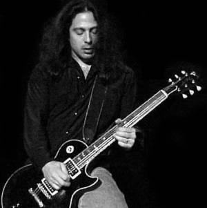

Al Pitrelli

 Datos
personales
Datos
personales
Proyectos paralelos - otros datos
 ver
fotos
ver
fotos

Datos personales
 Guitarrista.
Guitarrista.
Guitarras que usa: Gibson Les Paul y Gibson Explorer.
Cuerdas que usa: d'addario EXL 140 10-52 LTHB.
Puas que usa: Dunlop.
Amplificador que usa: Rocktron y Marshall.

Proyectos paralelos -
otros Proyectos
Al tiene una extensa carrera, aca va una pequeña biografia:
- Toco con la banda Widowmaker junto al ex cantante de Twisted Sister Dee Snider.
- Toco con Randy Coven en la banda CPR.
- Toco con Alice Cooper en el "Alice Cooper Trashes the World Tour", con el grabo la canción "Burning Our Bed" del album "Hey Stupid"
- Tambien trabajo con el grupo Asia:
1991: trabajo en el album "No Bed of Roses"
1993: Trabajo en el album "Aqua"
1994:Trabajo en la primera parte del tour "Aria".
- Toco tambien en una banda llamada Vertex
- Participo en un disco llamado "flesh and Blood" que salio en europa por la compania MTM
- Participo del album tributo a Deep Purple llamado "Black Night"
- Participo junto a Joe Franco en una banda llamada "mojo Bros"